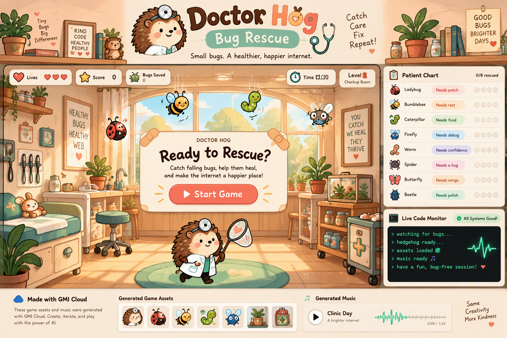

✳ THE MAKING OF A TINY GAME
Behind the scenes.
GMI Cloud MCP generated the clinic, bug sprite, code terminal, lo-fi jazz track, and the full-page concept that guided the interface. The playable Doctor Hog is the exact original artwork you provided.

GMI DESIGN CONCEPT
From idea to arcade
This image was the visual brief for the live game. It suggested the illustrated clinic, floating game HUD, patient chart, code monitor, and music area.
The concept’s draft hedgehog is different. The playable game uses your original Doctor Hog file byte for byte.


♫ Soundtrack from GMI Cloud
Lo-fi jazz instrumental, prompted without vocals. The music plays during a shift and pauses with the game.